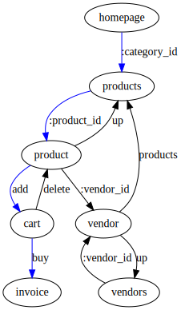

3 Mental Models of APIs
Viewing this by yourself? Hit 's' to see my speaker's notes.
API as...
Persistence layer
("REST"/GraphQL/Graph APIs generally)
Namespace of functions
(RPC, ie gRPC)
State machine
(REST)
So I've come to see roughly 3 mental models of API design. Persistence layer, namespace of functions, and state machine. What do all these have in common? They represent ways for the client to think of their integration layer. Are you integrating with storage? Are you integrating with a module? Are you integrating with another process or program?
Ok, so, what's the best model?
"Essentially, all models are wrong , but some are useful." --- Box, George E. P.; Norman R. Draper (1987). Empirical Model-Building and Response Surfaces, p. 424, Wiley. ISBN 0471810339.
There isn't one model that is right for all use cases. I'm going to lean on analogy here, so forgive me. I tend to think of these models as trying to contribute in different ways. Say we have to dig a hole. I can give you the iron to make shovels, or a bunch of shovels, or a crew of people with shovels. Phrased that way you're probably like "well give me the crew." But what if you already have the work crew? You probably only want the shovels. What if you only have one worker ultimately? Maybe then you want to build an earthmover. You might just want the raw materials to build it. Ok this is a bad analogy.
ü§î
When building an API, what abstraction level should we expose to the client(s) for this piece of functionality ?
Well, what does the client want? Or what do we want the client to want? Or will we have multiple clients, with competing "wants"?
I see sort of a gradient of abstraction here. You can give people data, which is not abstract at all, it's just concrete values, or you can give people functions which operate on data or each other, or you can give people entire slices of application execution, which is very abstract.
Personal Opinion Alert
⚠
Let's put the "Application" back in Application Programming Interface.
My bias is towards giving people a more abstract API, because giving people concrete values has two big downsides. One is that they can infer all kinds of meaning in concrete values I might not have intended. It's a lot harder to infer meaning in an abstract application state that I didn't put there explicitly. The other downside is that we become coupled at a pretty fine grain when you're looking at concrete values. This is why query languages like GraphQL are becoming popular. They're to try to help solve the second problem, but I'm not convinced they help us with the first problem.
Reality: your API is probably gonna do a bit of all 3.
If you're serving multiple, potentially thick, clients: you likely want some generic data exposure (like "REST" or GraphQL).
If you're providing unsequenced commands clients can choose how to present but you implement (and you can't just release as a local module): you need some RPC.
If you're providing sequenced workflows (like, y'know, business processes ): you want REST with HATEOAS.
Why am I pointing out sequence here? (Ask audience: who here has dealt with a tricky or devastating race condition in a production system?) Allowing arbitrary resequencing of operations on the client side increases complexity. So sometimes you don't want to do that.
Ok dude. Why do you keep putting REST in scare quotes sometimes?
REST has a maturity model .
üòí So..?
So fully "mature" REST has to obey the hypermedia constraint.
Hypermedia sounds super esoteric, but it's actually so common you don't notice it. Every piece of HTML you interact with is the surface of a hypermedia API. But in the development community today, we only think of APIs as serving JSON, and the dominant model of using JSON is data exposure. When people become frustrated with the limitations of data exposure, they reach for RPC. That's not wrong, but I want to introduce you to another tool in your toolbox.
❌
üè≠ resource state
application state üéÆ
✅
For that, I need to introduce a couple other terms. Resource state, and application state. Most people think of REST as focusing on resource state, and being resource-centric.
(Ask audience: what is resource state?) Resource state is the server's state. The client will never have direct access to it. Instead they'll receive representations.
So we tend to think of resources as 1:1 with objects, and REST as the CRUD we can do to those objects. In fact, originally the only restriction on what can be a resource is that it has a URL. So literally: can you dereference this? Then it's a resource.
(Ask audience: what is application state?) Application state is what's on the client, and likewise, the server will never have direct access to it. In the simplest possible case, the application state on the client is the last representation of resource state a client received from the server, which encompasses likely some object's state and crucially the state transitions the server will accept to change state.
Between these two states, your application is sitting on some state in the overall state machine. I want to encourage you to try thinking less in terms of resource state, and more in terms of application state, especially in state transitions.
Here's a pretty simple graph. I think the way most people look at RESTful APIs today, they see each node as a representation of persisted object state. The only links people concieve of are at the object relation level. So something like GraphQL extends and seems to supercede that view by giving you a flexible language to redefine objects and traverse an object graph. As a side note, I want to point out that's not really new. If you're curious, check out SPARQL.
Anyway this object relation model isn't wrong. But I'm using this graph to represent the state machine of our application on the server. So the red is a path of execution through that program. You can think of the edges as simple links, but it's important to see them also as more advanced controls like forms.
Imagine this is showing us a business process we provide. Every node is an application state and every edge between nodes is a state transition. Technically speaking, every node is a representation of a resource, and every edge is a link relation. Speaking less formally, every node is roughly a page, and every edge is an action to change the page.
The content of any node may be made up of multiple different objects. This is possible because resources don't have to map to our object model 1:1. A resource is free to be a higher level abstraction. One key thing to observe about this state machine graph is that you can negotiate with a client about how much of it to send over at once. If you want totally dynamic binding, you can just give your client a single node at a time. But for clients that want fewer requests, you can let them request subgraphs or even the entire graph at a single request. That's called transclusion and we can chat about it a bit more if you're curious.
TL;DR: try state machines instead of entity-relations
I think most would agree that whether you want to think about the graph of program state or the graph of object relationships, we can get a ton of mileage out of looking at our APIs as graphs. But because the object relations model comes really naturally to people, I want to keep on highlighting the state machine view. If you get just one thing out of this presentation, I'm hoping it is that I pique your curiosity in this direction. To that end, I have a really brief example about that I think is valuable. I'm stealing it from a great presentation by APIFortress.

(first fragment) Who has heard of Etsy? Ok, Etsy's navigation at root works based on categories, which they call recipients. So a product has possibly many categories it fits into, and if you look at one of its categories you'll find the product.
(second fragment) Now, data integrity wise, a product doesn't have to have a category to be valid. But users can't easily reach any products without a category. If we think about the application state graph a user has to traverse, we can see immediately that products without categories are at a huge disadvantage--you can only see them if you're already browsing a store. You can't see that though if you're thinking about relationships between objects, because you're not thinking about them in the context that they will be used in, their semantics. Let's pretend another client for Etsy was written and that client didn't organize products by categories first, let's pretend instead they organized by vendor. That's the dashed red line. I'd say that's a bad client design based on this graph, because the user has to traverse more edges to get to the buy state, and that's our real target state.
(third fragment) What if we introduced a top vendors state, which transcluded top 5 products in it? Better or worse design?
application/vnd.siren+json
"actions": [
{
"name": "add-item",
"title": "Add Item",
"method": "POST",
"href": "http://api.x.io/orders/42/items",
"type": "application/x-www-form-urlencoded",
"fields": [
{ "name": "orderNumber", "type": "hidden", "value": "42" },
{ "name": "productCode", "type": "text" },
{ "name": "quantity", "type": "number" }
]
}
],
So the most popular hypermedia JSON type right now is probably JSON:API. But I want to show you an example of something else called Siren. This is just a snippet off the whole example which is at the link.
(Ask audience: at this state in the application, does anyone not know how to add an item? Ask audience again: now, here's a more interesting question to me, could you write code to render this generically? Like if this wasn't "add-item", and it used "GET" instead of "POST", could you fairly easily write code to render it too? Who here isn't sure they could write code generic enough to render both?)
So I'd be really surprised if you couldn't. Now, the client obviously should be doing more work than that to help a user understand what to do, but there's a nice property of this generic rendering. If the server changes, it doesn't break the client. The client maybe doesn't see a pretty styled thing anymore, because they were applying some thought and design on their end, but they can still see the action and the client can still make that request to the server. This is because we gave affordances instead of just data.
(Ask audience: who can tell me what an affordance is, in the world of design?)
noun af·ford·ance \ə-ˈfȯr-dəns\
"We sit or stand on a chair because those affordances are fairly obvious." — Scott Lafee, San Diego Union-Tribune, 15 Aug. 1993
In our domain, we can get a little more specific about what affordance means to us.
the qualities or properties of a representation that define its possible state changing transitions or make clear how it can or should be used to move to other program states
the simultaneous presentation of information and controls such that the information becomes the affordance through which the user (or automaton) obtains choices and selects actions — Roy T. Fielding
This sounds a little highbrow, but all I'm really saying here is that people know how to use a readymade object sooner than they know how to recreate that object out of raw materials. When we build data APIs, we're giving people raw materials, and we have very little guarantee that they're going to build the same thing we would've built when we provided that data to them.
data with affordances > data without affordances
üí∫ > üå≤
(Humans prefer to sit on chairs.)
So you can take a motto from this that data with affordances is better than data without affordances. Fully "mature" REST, with hypermedia, is just about providing responses with affordances that help a user understand where they are in the application, and what they can do. If you're a client developer, I want you to be asking me for affordances with data. If you're a server developer, I want you to be providing affordances with data. Why? Because that way we'll have a shared understanding of what the semantics of the application are in total, in the space between the client and server where our real program exists a little amorphously.
The child begins, no doubt, by perceiving the affordances of things for her, for her own personal behavior. She walks and sits and grasps relative to her own legs and body and hands. But she must learn to perceive the affordances of things for other observers as well as for herself. — James J. Gibson, The Ecological Approach to Visual Perception
I want to leave you with a quote from the design scholar that coined the term affordance and ask you a favor. When you go back to your desks today, just give 5 minutes thought to the kind of APIs you're writing or integrating with. Do you treat your API as just a data layer? Is it just an RPC namespace? Do you share program state in self-descriptive messages? What tradeoffs have you found in each of these models? Do you think about your API in a totally different mental model? I'd love to hear your thoughts on these questions. And if you have any questions about what I've described or the practical aspects of what I've outlined I'm happy to take them now or chat later.